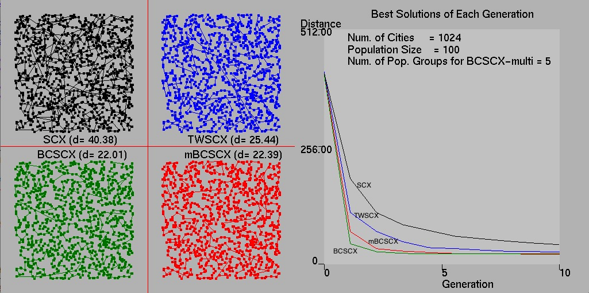
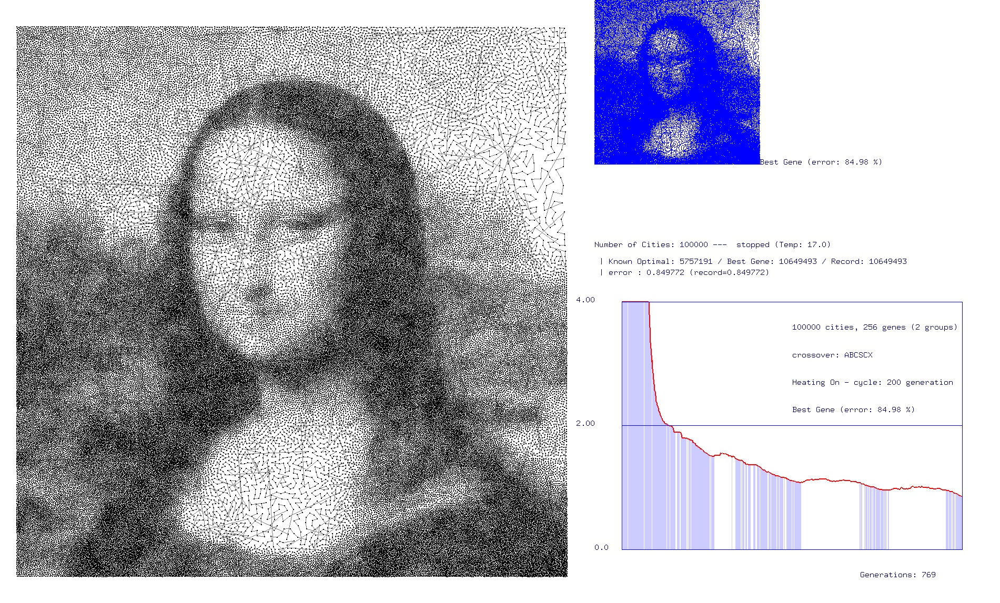

Advaced Research Center for Games
Research Activities of ARC4G - Advanced research center for Games
Send your email to young.min.kang at gmail.com.
Arc4G Current Research Project - GPU-based Optimization of Global Optimization Problems Go To Repository: Travelling Saleman Problem - Genetic Programming with GPU   Research Papers Useful links